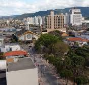

Palhoça é um município brasileiro do estado de Santa Catarina. Faz parte da região metropolitana de Florianópolis, no litoral do estado, conurbando-se com o município de São José. Sua população, conforme as estimativas populacionais publicadas pelo IBGE para 2025, era de 253.469 habitantes, sendo o sétimo município mais populoso do estado.[
Palhoça faz limite com as cidades de São José, ao norte, Santo Amaro da Imperatriz a oeste, e Paulo Lopes ao sul, sendo banhado pela baía sul da Ilha de Santa Catarina e o Oceano Atlântico.
